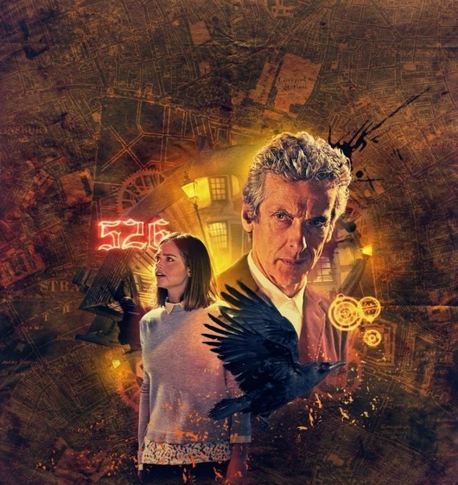

Эра Двенадцатого Доктора (9 сезон)
<<< НАЗАД ||| 10. Узри ворона ||| ДАЛЬШЕ >>>
MVO [TVShows], [Кириллица], [Baibako], [Jaskier], [RedDiamond studio], [IdeaFilm] или Original [ENG]
Субтитры: Русские {TrueTransLate} или Английские
 | Весь 9-й сезон (12 серий) |
Face the Raven
Дата выхода: 21 ноября 2015
Формат: 45-минутный эпизод
| Варианты озвучек: | * Разные: смотрите по инструкции |
|---|---|
| Скачивание и просмотр: |
Бывало ли такое, что вы вдруг оказывались на улице, которую никогда раньше не видели, а на следующий день уже не могли её отыскать? И это вовсе не сон. Память не подводит. Как и многие потерянные души на протяжении многих веков, вы обнаружили невероятную тайну, и радуйтесь, что остались живы. Вместе с Ригси, Доктор и Клара оказываются в тайном мире пришельцев, скрытом на улицах Лондона. И живыми выберутся не все, одному из них предстоит узреть ворона...


Трейлер:
https://youtu.be/tGGJeQVQdS8